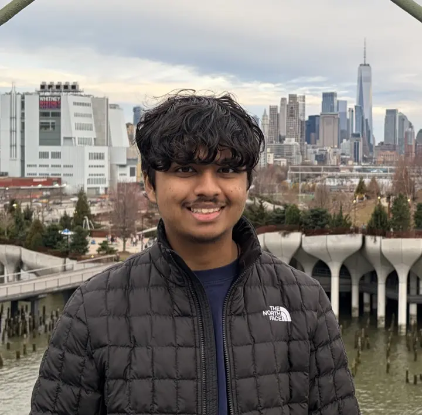

KushalMamillapalli
I build recommendation systems and the infrastructure behind them.
Curious about
how things connect.
I’m a data engineer at Spotify, working on personalization pipelines.

I graduated from NYU Tandon with a degree in Computer Science in 2026.
Building Gunpla
Murder mysteries
Rubik’s cubing
Let’s build, make, and talk.
Let’s talk.